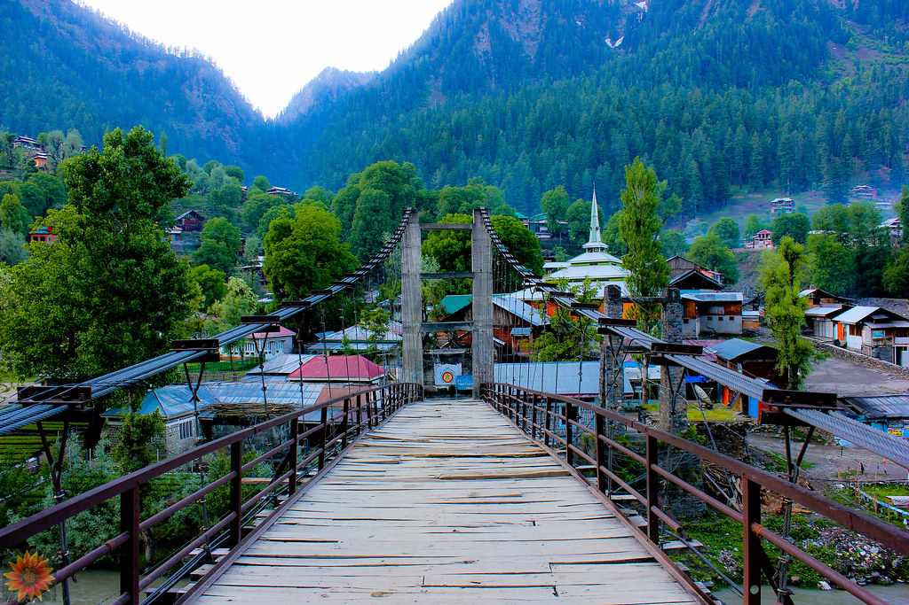
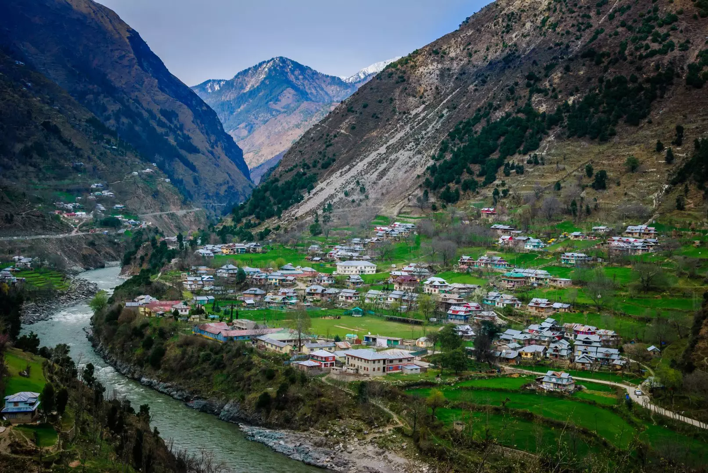
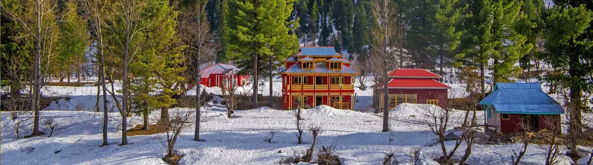

Azad Kashmir is located in Pakistan and is an administrative region of Pakistan. Azad Kashmir is known as Jannat Nazeer Wadi (Paradise Valley). It is considered as the most beautiful region of the subcontinent as it has fertile green mountainous valleys. Muzaffarabad is the capital of Azad Kashmir. It comprises hilly areas and is at the bank of Jhelum and Neelum River. The Tarai Mountains in Muzaffarabad offers a breathtaking view and captivates one’s attention. The city is pollution-free and has a moderate climate in summer and winters are very cold. The city receives heavy rainfall every year.

Muzaffarabad has its own Supreme Court and High Court. It has a cricket stadium too, although the stadium hasn’t hosted any international matches. The city also has a 5 star Pearl Continental Hotel. The people of Kashmir speak different languages. Kashmiri, Gojri, and Urdu are the official languages of Azad Kashmir whereas; you will see people speaking Hindi, Pahari, and Ladakhi too. Azad Kashmir has many common fruits that taste very good. The fruits that are popular in Azad Kashmir are Apricots, Apples, Plums, and Walnuts. Kashmiri people love to eat rice and don’t consider a meal without rice. Their favorite dish is Gushtaba and Tabaq Maaz.

The Neelum Valley in Kashmir is full of traveling places that are visited by thousands of travelers every year. This valley is one of the most beautiful valleys in Pakistan. The tourist destinations that made Neelum Valley special among travelers are Upper Neelum, Sharda, Sharda University, Neelum River, Ratti Gali, Taobao, Kel, Arang Kel, Kutton Waterfall, Dhani Waterfall, Baboon Valley, Minimarg, Noor Top, Chitta Katha, and much more. The highest mountain of the Neelum Valley is Sarwali which is 6326 meters high.
Other than the Neelum Valley, there are several other places to visit. Bandala Valley, Kas Chanatar, Samahni Valley, Bagh Valley, Baghsar Lake, Ganga Lake, and the list is very long. There are four rivers that pass from Azad Kashmir. Jhelum River is the largest river that flows from Azad Kashmir. Neelum, Poonch, and Shingo River also pass from Kashmir.